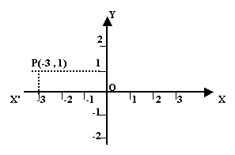

Temario
Unidad 1 Sistemas coordenados
- Sistemas rectangulares
- Puntos en el plano
- Distancia entre dos puntos
- Division de un segmento en una razon dada
- Punto medio
- Perimetros y areas
- Sistemas polares
- ...Elementos
- ...Transformaciones
- ...Trasformaciones de sistemas rectangulares a polares
- ...Trasformaciones de sistemas polares a rectangulares
|
Unidad 2 Lugares Geometricos
- La recta
- Propiedades de la recta
- Formas de la ecuacion de la recta
- Interseccion de las rectas
- Relacion entre rectas
- Rectas notables del triangulo
- Conicas
- Circunferancia
Propiedades,ecuaciones,condiciones geometricas y analiticas de la cicunferencia
- Parabola
Propiedades,ecuaciones,condiciones geometricas y analiticas de la parabola
- Elipse
Propiedades,ecuaciones,condiciones geometricas y analiticas de la Elipse
- Hiperbola
Propiedades,ecuaciones,condiciones geometricas y analiticas de la Hiperbola
|
Geometria analitica
La Geometria Analitica fue iniciada y desarrollada
por el eminente matemático y filósofo Renato
Descartes. Por eso a este sistema de ejes
coordenados también se le conoce como "Sistema
Cartesiano".
Geometria Analitica: sistema de ejes coordenados
rectangulares.- Dos rectas que se cortan se
encuentran en un mismo plano. Si las líneas son
perpendiculares entre sí tenemos lo que se llama
un sistema de ejes coordenados rectangulares.
En geometria, si trazamos dos rectas numéricas
perpendiculares entre sí haciendo coincidir el
punto de corte con el cero común, obtenemos un
sistema de ejes coordenados rectangular.
La línea X'X se llama eje de las x o eje de las
abscisas y la línea Y'Y se llama eje de las y o
eje de las ordenadas.
En geometria los ejes dividen al plano en cuatro
partes llamadas cuadrantes. XOY es el primer
cuadrante, YOX' el segundo, X'OY' el tercero y
Y'OX el cuarto cuadrante.
Podemos decir que el origen O, donde se encuentra
el cero común de ambas rectas numéricas, divide a
cada eje en dos semiejes, uno positivo y el otro
negativo. Cualquier distancia o posición medida
sobre el eje de las x de O hacia la derecha es
positiva y de O hacia la izquierda es negativa.
Similarmente, cualquier distancia o posición medida
sobre el eje de las y de O hacia arriba es positiva
y de O hacia abajo es negativa.
La distancia de un punto al eje de las ordenadas
se llama abscisa del punto y su distancia al eje
de las abscisas se llama ordenada del punto. La
abscisa y la ordenada del punto son las coordenadas
cartesianas del punto. Las abscisas medidas del eje
YY' hacia la derecha son positivas y hacia la
izquierda, negativas. Las ordenadas medidas del
eje XX' hacia arriba son positivas y hacia abajo
son negativas.
Ubicacion de un Punto por sus
Coordenadas
Conociendo las coordenadas de un punto se puede
ubicar el punto en el plano. Por ejemplo, ubicar el
punto cuyas coordenadas son -3 y 1. Por convención
el número que se menciona primero es la abscisa y
el segundo la ordenada. La notación empleada para
indicar que la abscisa es -3 y la ordenada 1 es
(-3 , 1).

Como la abscisa es negativa , -3, tomamos sobre OX'
de O hacia la izquierda tres veces la unidad
escogida; en -3 levantamos una perpendicular a OX'
y sobre ella llevamos una vez la unidad hacia
arriba porque la ordenada es positiva, 1. El punto
P es el punto (-3 , 1), en el segundo cuadrante.
Línea recta
Si l es una recta no paralela al eje Y, y si P ¹ (X ¹, Y ¹) y P ² (X ², Y ²) son puntos diferentes en l, entonces la pendiente o inclinación M de l esta dada por
Y ²- X ¹
M = —————
X ²- X ¹
Si l es paralela al eje, entonces la pendiente no esta definida.
Al numerador Y ²-Y ¹ en la formula para M, en ocasiones se le llama desnivel de P ¹ a P ². Mide el cambio vertical de dirección al avanzar de P ¹ a P ², y puede ser positivo, negativo o cero. El denominador X ² - X ¹ se llama corrimiento de P ¹ a P ². Mide el cambio de dirección horizontal al recorrer de P ¹ a P ². El corrimiento puede ser positivo o negativo, pero nunca cero, porque l no es paralela al eje Y. usando esta terminología,
Desnivel de P ¹ a P ².
Pendiente de l = ————————————
Corrimiento de P ¹ a P ².
Cuando se determina la pendiente o inclinación de una recta l es irrelevante cual punto se denominara P ¹, y cual, P ²,
Y ²- Y ¹ Y ¹ - Y ²
————— = ——————
X ²- X ¹ X ¹ - X ²
En consecuencia, puede suponerse que los puntos se denominan de modo que X ¹ < X ², en este caso, X ²- X ¹ > 0, y por consiguiente, la pendiente es positiva, negativa o cero, dependiendo de si Y ² > Y ¹, Y ² < Y ¹ o bien Y ² = Y ¹. La pendiente de la recta mostrada en la grafica (i) es positiva, en tanto es negativa la pendiente de la recta mostrada en (ii) de la grafica.
Una recta horizontal es una recta paralela al eje X. obsérvese que la recta es horizontal si y solo si su inclinación vale 0. Una recta vertical es un recta paralela al eje Y. la inclinación de una recta vertical es indefinida.
La parábola
Una parábola es el conjunto de todos los puntos de un plano que son equilibrantes de un punto fijo F llamado foco y de una recta fija l denominada directriz situados en el plano.
Ejemplo.
Hallar el foco y la directriz de la parábola que tiene por ecuación Y ² = - 6X y trazar su grafica.
En consecuencia el foco y la ecuación de la directriz están dados por F (³/², 0) y X = ³/², respectivamente.
La hipérbole
La definición de la hipérbole es similar a la de la elipse. La única diferencia es que en lugar de considerar la suma de las distancias a dos puntos fijos, se toma la diferencia.
Una hipérbole es el Conjunto de todos los puntos en un punto plano, tales que la diferencia de sus distancias a dos puntos fijos del plano llamados focos, es una constante positiva.
Ejemplo.
Analizar y trazar la grafica de la ecuación 9X ² - 4Y ² = 36
Dividimos ambos lados entre 36, tenemos:
X ² Y ²
¯¯¯¯ ¯ ¯¯¯¯ = 1
9
Que esta en la forma canónica establecida en el teorema con a ² = 4 y b ² = 9; es decir, a = 2 y b = 3. Los vértices (± 2, 0) y los puntos extremos (0, ± 3) del eje conjugado determinan un rectángulo, cuyas diagonales (prolongadas) dan las asíntotas. La grafica o las ecuaciones y = ± (b/a) X permiten encontrar las ecuaciones de las asíntotas: y = ± ³/² X. como c ² = a ² + b ² = 4 + 9 = 13, los focos son (±V¯13, 0).
En el ejercicio anterior se muestra que para las hipérboles no siempre se cumple que a < b, como en el caso de las elipses se puede tener a < b, a > b o bien a = b.